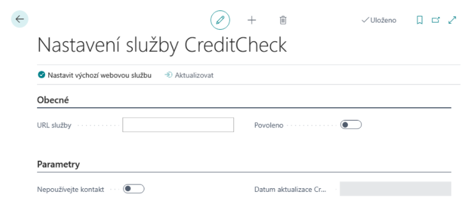

Sada rozšíření pro Finance - Nastavení
Aktualizace: 21.09.2025
Nastavení rozšíření DPH
Nastavení registrace k DPH na dokladech
V Nastavení financí se zadává datumový vzorec, který systém použije (ve vztahu k pracovnímu datu) pro definici období, ve kterém upozorňuje uživatele na zastaralou informaci o registraci k DPH. Není-li pole Vzorec data kontroly DIČ na dokladech vyplněno, je upozorňování vypnuté.
- Vyberte ikonu
 , zadejte Nastavení financí a poté vyberte související odkaz.
, zadejte Nastavení financí a poté vyberte související odkaz. - Na stránce Nastavení financí v záložce Ostatní nastavte pole Vzorec data kontroly DIČ na dokladech.
Nastavení krácení odpočtu DPH
Nastavení účtování DPH
- Vyberte ikonu , zadejte Nastavení účtování DPH a poté vyberte související odkaz.
Pro kombinace DPH účto skupin, kde se bude řešit krácení vstupní DPH koeficientem, musí být nastaveno (kromě jiného):
- Typ účtování koeficientu DPH
- Koef.DPH účto skupiny zboží
Dále musí být nastaveny nové kombinace stejné DPH obchodní účto skupiny a DPH účto skupiny zboží definované v poli „Koef.DPH účto skupiny zboží“ (viz výše) s Typem výpočtu DPH = Plná DPH
Pro tyto kombinace musí být nastaveno (kromě jiného):
- „Účet opravy neodčitatelné DPH“ – použije se jako protiúčet běžného nákupního účtu DPH při přeúčtování krácení odpočtu DPH koeficientem.
Note
Nastavené kombinace DPH účto skupin s Typem výpočtu DPH = Plná DPH nevstupují do výkazu DPH.

Nastavení zálohového koeficientu
- Vyberte ikonu , zadejte Nastavení financí a poté vyberte související odkaz.
- V poli Zálohový koeficient DPH" na záložce DPH nastavte hodnotu procenta platného pro aktuální účetní období.
Nastavení registrace k DPH ve více zemích
Více DIČ zákazníků
- Vyberte ikonu , zadejte Zákazníci a poté vyberte související odkaz.
- Vyberte akci Země/oblasti registrace.
- Zadejte kód země a DIČ pro vybraného zákazníka.
- Dále doplňte DPH obch. účtoskupinu, která se má použít v případě prodeje zákazníkovi do této země.
Více DIČ dodavatelů
- Vyberte ikonu , zadejte Dodavatelé a poté vyberte související odkaz.
- Vyberte akci Země/oblasti registrace (Související -> Dodavatel).
- Zadejte kód země a DIČ pro vybraného dodavatele.
- Dále doplňte DPH obch. účtoskupinu, která se má použít v případě nákupu z této země dodatatele.
Více registrací k DPH
Základní nastavení spočívá v evidenci registrací k DPH v jednotlivých zemích a nastavení, jak má systém měnit DPH účtoskupiny v dokladech pro správné zpracování položek DPH při uzavírání DPH a pro správnou tvorbu podkladů (nejčastěji pro účetní kanceláře v daných zemích).
- Vyberte ikonu , zadejte Informace o společnosti a poté vyberte související odkaz.
- Vyberte akci Země/oblasti registrace.
- Na stránce Země/oblasti registrace zadejte kód země a DIČ společnosti registrované v této zemi. Pro vytvořený záznam doplňte Kód měny (místní) určující měnu, ve které se podává přiznání k DPH ve vybrané zemi.
- Zavřete stránce Země/oblasti registrace.
- Vyberte akci Směry registrace Země/oblasti.
- Na stránce Směry registrace Země/oblasti definujte, jak má systém nahrazovat DPH obch.účtoskupiny na dokladech.
V případě používání jiné měny než lokální v zemi registrace, je nutné udržovat kursy mezi měnou dokladu a lokální měnou země registrace.
- Vyberte ikonu , zadejte Měny a poté vyberte související odkaz.
- Vyberte akci Směnné kursy země/oblasti registrace.
- Zadejte datum a směnný kurs.
Note
Systém neobsahuje funkcionalitu pro import směnných kursů země/oblasti registrace.
OSS – EU režim
- Vyberte ikonu , zadejte Nastavení financí a poté vyberte související odkaz.
- V poli Registrace OSS – EU na záložce DPH potvrďte, že je vaše firma registrována pro režim OSS.
- V poli Kód měny pro OSS na záložce DPH vyberte kód měnu odpovídající měně Euro.
- Vyberte akci Nastavení DPH pro OSS (Související -> DPH účtování).
- Na stránce Nastavení DPH pro OSS zadejte DPH obch.účtoskupinu pro kombinaci zemí zahájení a ukončení přepravy a zvolte, jestli pro tuto kombinaci má být doklad označen jako OSS.
Note
Kombinace s příznakem OSS = Ne je nutné definovat pro případy, kdy se v praxi objeví potřeba vypnout na prodejním dokladu režim OSS.
Nastavení účtování přeplatků nákupních záloh
Popsaná automatizace při účtování finální faktury se zapíná v Nastavení účtování DPH pro vybrané kombinace účtoskupin. Pokud je toto chování vhodné pouze pro některé případy, je třeba pro ně míst vydefinované zvláštní DPH účtoskupiny (zboží).
- Vyberte ikonu , zadejte Nastavení účtování DPH a poté vyberte související odkaz.
- Na stránce Nastavení účtování DPH vyhledejte záznam pro který chcete zapnout a zvolte funkci Úpravy.
- Na stránce Karta nastavení účto DPH nastavte příznak Určeno pro vrácení zálohy.
Nastavení kontroly CREDITCHECK
Nastavení kontroly CreditCheck
- Vyberte ikonu , zadejte Nastavení služby CreditCheck a poté vyberte související odkaz.
- Spusťte funkci Nastavit výchozí webovou službu, která naplní URL služby.
- Službu spustíte pomocí tlačítka Povoleno.

Note
Pokud vaše firma nepoužívá Kontakty, je třeba zapnout Nepoužívat kontakty pro CreditCheck. Pak se při stažení dat z CrediChecku budou plnit přímo pole „Stav CreditCheck“ na kartě zákazníka, dodavatele.
Aktualizace informací o bonitě
Aktualizaci je možné provádět manuálně dle potřeby nebo nechat systém provádět aktualizaci v pravidelných intervalech.
Pro automatické nastavení postupujte takto:
- Vyberte ikonu , zadejte Nastavení služby CreditCheck a poté vyberte související odkaz.
- Nastavte příznak Automatická aktualizace.
Note
Vytvořená položka fronty úloh je ve výchozím stavu nastavena na spouštění v 6:00 v pracovní dny.
Manuální aktualizaci provedete pomocí funkce Aktualizace stavu CreditCheck takto:
- Vyberte ikonu , zadejte Aktualizace stavu CreditCheck a poté vyberte související odkaz.
- Službu spustíte pomocí tlačítka OK.
Nastavení uživatelů
V nastavení uživatelů na záložce Obecné je nový boolean „Povolit změnu stavu CreditCheck“, který po-kud jej má uživatel zaškrtnut, pak mu umožní zrušit naimportovaný stav.
Nastavení a aktualizace webových zdrojů
V nastavení kontroly CreditCheck je možné zapnout aktualizaci vytváření webových zdrojů pro všechny kontakty s vyplněným IČ.
- Vyberte ikonu , zadejte Nastavení služby CreditCheck a poté vyberte související odkaz.
- Nastavte příznak Aut. aktualizace webových zdrojů.
Note
Vytváření webových zdrojů pro placený výpis je možné pomocí Aut. aktualizace webových zdrojů - Plný, ovšem pouze pokud je vyplněno pole Přístupový kód.
Note
Vytvořená položka fronty úloh je ve výchozím stavu nastavena na spouštění v 6:00 v pracovní dny.
Nastavení Hierarchického návrhu prodejních cen
Metody výpočtu ceny (od verze 22.0, volitelně od 18.0)
Od verze Business Central version 22 (popř. od Business Central version 18 pokud máte ve Správě funkcí zapnuto „Aktualizace funkcí: Nové zkušenosti s cenami prodeje“) provedete zapnutí hierarchického návrhu prodejních cen zboží takto:
- Vyberte ikonu , zadejte Metody výpočtu ceny a poté vyberte související odkaz.
- Kliknutím vyberte metodu Nejnižší cena.
- V části Výpočet prodejní ceny vyberte pro Zboží implementaci s názvem Finanční balíček AC – hierarchický (kliknutím na hodnotu v poli Implementace použita).
Nastavení prodeje a pohledávek (do verze 21.0)
- Vyberte ikonu , zadejte Nastavení prodeje a pohledávek a poté vyberte související odkaz.
Tip
Nastavení závisí na používané verzi. Ve verzi Business Central version 17 pro zapnutí zvolte Hierarchický návrh cen povolen.

Tip
Od verze Business Central version 18 doporučujeme používat zcela novou funkcionalitu pro cenotvorbu v BC.
Vyberte ikonu , zadejte Správa funkcí a poté vyberte související odkaz. Ověřte, že máte funkci Aktualizace funkcí: Nové zkušenosti s cenami prodeje povolenu pro všechny uživatele.
Nastavení kumulování plateb
Nastavení dodavatele pro kumulaci plateb
- Vyberte ikonu , zadejte Dodavatelé a poté vyberte související odkaz.
- Otevřete kartu dodavatele pro kterého chcete povolit kumulaci plateb.
- Na stránce Karta dodavatele v záložce Platby nastavte Kumulovat platby.
Nastavení parametrů kumulace na bankovním účtu
- Vyberte ikonu , zadejte Banky a poté vyberte související odkaz.
- Otevřete kartu bankovního účtu pro který chcete nastavit kumulaci plateb.
- Na stránce Karta bankovního účtu v záložce Platební příkazy/Bankovní výpisy nastavte kumulaci plateb dle potřeby.
Možnosti nastavení kumulace plateb
- Pole Kumulovat platební příkazy – zapíná/vypíná kumulaci
- Pole Kumulovat export podle variabilního symbolu – kumulace se za VS
- Pole Kumulovat export podle konstantního symbolu – kumuluje se za KS
- Pole Kumulovat export podle specifického symbolu – kumuluje se za SS
- Pole Číselná řada variabilního symbolu – pokud se nekumuluje dle VS, KS nebo SS, pak se do pole VS doplní číslo dle zde nastavené číselné řady (SS a KS se vezmou z prvního slučovaného řádku příkazu)
- Pole Popis kumulovaného řádku plat. příkazu – popis pro vytvořený kumulovaný řádek
Nastavení kontrol směnných kurzů
Kontrola správnosti při zadávání směnného kursu
Na každé v systému definované cizí měně se dají nastavit horní a dolní limit hodnoty v lokální měně. Zvlášť výhodné je to u málo používaných měn, kdy je o to větší riziko chyby uživatele při zadávání kursu na dokladu, apod. Je-li pole s limitem na měně prázdný, kontrola se neprování.
- Vyberte ikonu , zadejte Měny a poté vyberte související odkaz.
- Spusťte akci Upravit.
- Na stránce karta měny v záložce Obecné nastavte pole Horní limit Částky vzt. sm.kurzu a Dolní limit Částky vzt. sm.kurzu.
Kontrola existence směnného kursu
V Nastavení financí se zadává datumový vzorec, který systém použije (ve vztahu k zúčtovacímu datu) pro definici období, ve kterém upozorňuje uživatele na neexistenci záznamu v tabulce směnných kurzů. Není-li pole Vzorec pro kontr.sm.kurzu na dokl. vyplněno, je upozorňování vypnuté.
- Vyberte ikonu , zadejte Nastavení financí a poté vyberte související odkaz.
- Spusťte akci Upravit.
- Na stránce Nastavení financí v záložce Ostatní nastavte pole Vzorec pro kontr.sm.kurzu na dokl.
Note
Obvykle se nastavuje „-1D“ pro denní směnné kursy.
Nastavení vymáhání pohledávek
Druhy vymáhání
Specifické typy vymáhání lze nastavit pomocí číselníku Druhy vymáhání:
- Vyberte ikonu , zadejte Druhy vymáhání a poté vyberte související odkaz.
- Na stránce Druhy vymáhání zadejte kód pro nový záznam (např. „FACTORING“ pro rozlišení důvodu vzniku pohledávky). Tento můžete doplnit i upřesňujícím popisem v poli Popis.
Nastavení rozšíření číselné řady
Nastavení masky číselné řady
Nové pole pro strukturu masky číselné řady bylo přidáno do tabulky číselné řady, kde uživatel definuje poziční strukturu čísla generovaného v této číselné řadě. Tato funkce umožňuje jednodušeji vytvářet nové číselné řady pro nový fiskální rok a snižuje množství chyb.
- Vyberte ikonu , zadejte Číselná řada a poté vyberte související odkaz.
- V poli Maska nastavte kombinaci pevných a zástupných znaků ve formátu „XXrrcccc“
- XX – fixní část čísla; musí být velkými písmeny, délka není omezena (jen celková délka výsledného čísla)
- rr (popř. rrrr) – označení roku, které doplní generátor ze zadaného počátečního datumu
- cccc - variabilní část čísla; musí být malými písmeny, délka není omezena (jen celková délka výsledného čísla)
Tip
Nastavíte-li masku „BVY1rrcccccc“, pak generátor spuštěný s počátečním datem 1.1.2021 vytvoří řádek číselné řady, kde Počáteční číslo bude „BVY121000001“ a Poslední číslo bude „BVY121999999“.
Nastavení návazností číselných řad
Byla přidána nová tabulka Návaznost číselné řady.
Vyberte ikonu
, zadejte Číselná řada a poté vyberte související odkaz.Vyberte akci Návaznosti.
Dle určení číselné řady vyplňte některý ze sloupců:
Návazná číselná řada – jaká číselná řada má být použita v navázané aktivitě, když má zdrojový dokument zadanou číselnou řadu: objednávka vytvořená z poptávky, objednávka vytvořená z hromadné objednávky
Číselná řada účtování – jaká číselná řada má být použita pro zaúčtovaný doklad, když má zdrojový dokument zadanou číselnou řadu: zaúčtovaný prodejní/nákupní/servisní doklad (faktura, dobropis), vydaná upomínka, vydané penále, účtovaná dodávka/příjemka skladu, účtovaná montážní zakázka, účtovaný příjem/výdej zásob, účtovaná obj. fyz. inventury
Číselná řada dodávky – jaká číselná řada má být použita pro účtovanou dodávku, když má zdrojový dokument zadanou číselnou řadu: účtovaná prodejní dodávka z prodejní objednávky nebo faktury, dodávka transferu z objednávky transferu
Číselná řada příjemky – jaká číselná řada má být použita pro účtovanou příjemku, když má zdrojový dokument zadanou číselnou řadu: účtovaná nákupní příjemka z nákupní objednávky nebo faktury, příjemka transferu z objednávky transferu.
Číselná řada dodávky skladu - jaká číselná řada má být použita pro dodávku ze skladu, když má zdrojový dokument zadanou číselnou řadu: dodávka ze skladu z objednávky prodejní/nákupní/transferu.
Číselná řada příjemky skladu - jaká číselná řada má být použita pro příjemku na sklad, když má zdrojový dokument zadanou číselnou řadu: příjemka na sklad z objednávky prodejní/nákupní/transferu.
Tip
Návazné číselné řady (účtování, dodávky a příjemky) jsou brány v potaz i v případě použití ručního čísla na prodejním či nákupním dokladu. Systém je doplní dle nastavení pro číselnou řadu, která je uvedena v Nastavení prodeje či Nastavení nákupu.
Nastavení zaokrouhlení dle způsobu úhrady
Nastavení zaokrouhlení se provádí různě v závislosti na měně, jako je tomu u jiných podobných parametrů:
Nastavení pro lokální měnu
- Vyberte ikonu , zadejte Nastavení financí a poté vyberte související odkaz.
- Vyberte akci Nastavení zaokrouhlení faktur.
- Na stránce Nastavení zaokrouhlení faktur definujte nastavení zaokrouhlení pro všechny způsoby plateb, u kterých má být jiné nastavení než to výchozí z Nastavení financí.
Note
Pohled je filtrován na prázdný Kód měny.
Nastavení pro cizí měny
- Vyberte ikonu , zadejte Způsoby plateb a poté vyberte související odkaz.
- Vyberte akci Nastavení zaokrouhlení faktur.
- Na stránce Nastavení zaokrouhlení faktur definujte nastavení zaokrouhlení pro cizí měny v kombinaci s vybraným způsobem platby, u kterých má být jiné nastavení než to výchozí z Karty měny.